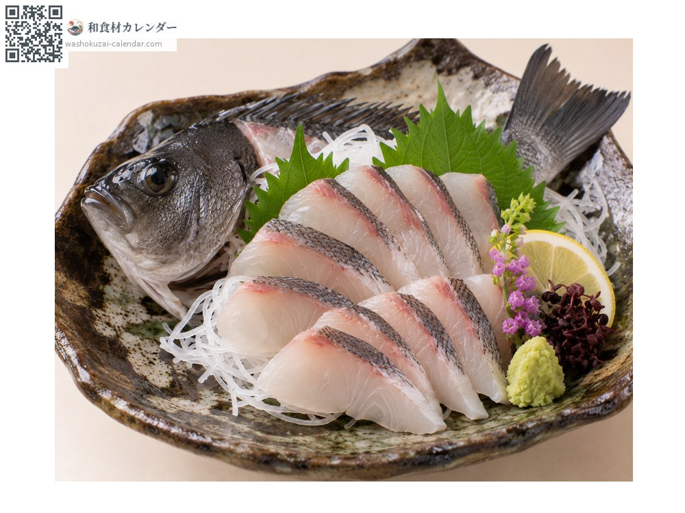
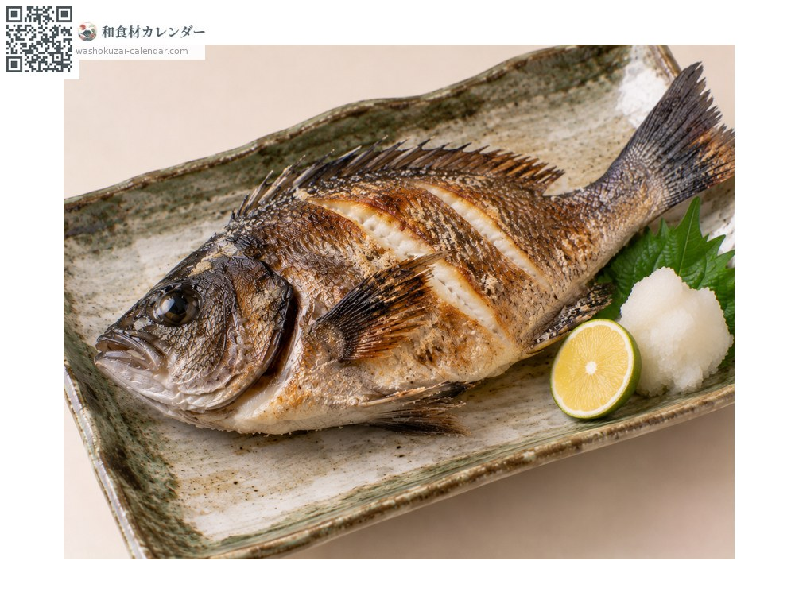
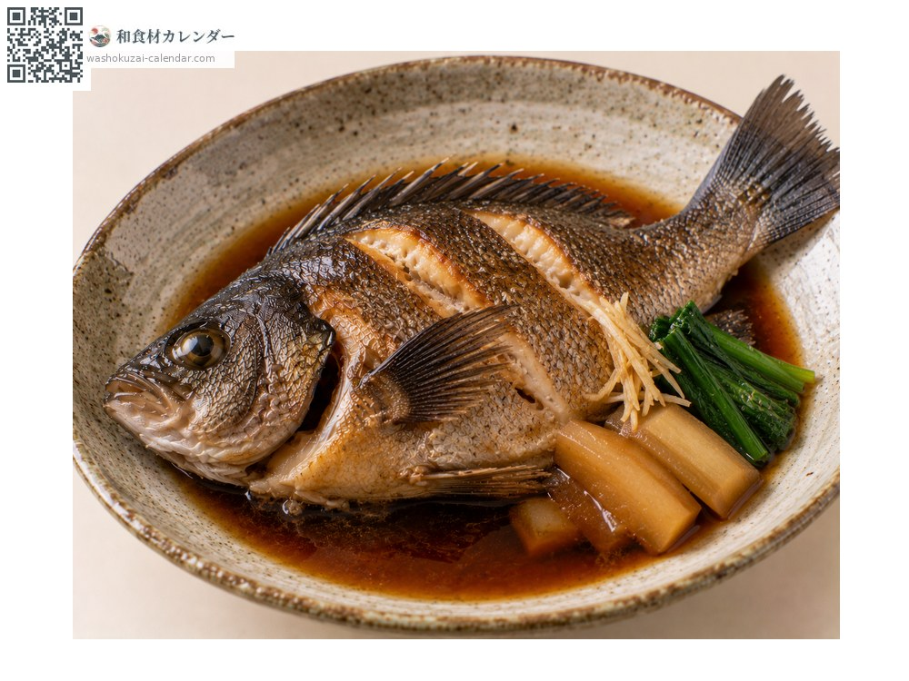
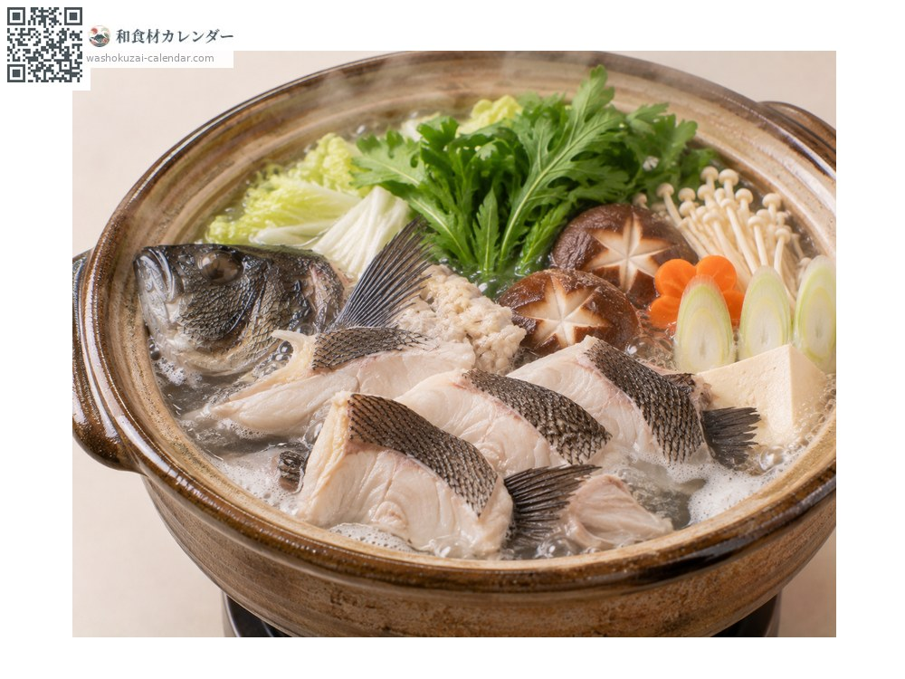

Seafood
Largescale blackfish
グレ ぐれ gure
Also known asgure, mejina
At its best in Jan, Feb, Nov, Dec

When it is at its best
Jan
Feb
Mar
Apr
May
Jun
Jul
Aug
Sep
Oct
Nov
Dec
In seasonAvailable
How to cook

Sashimi
Winter fish carry fat and little of the seaweed note. Slice thin to bring out the bite.

Shioyaki (salt-grilled)
Grill the skin side until fragrant. The flesh is lean and firm.

Nitsuke (simmered in sweet soy)
Simmered in sweet soy. The bones give a good broth.

Nabe (hot pot)
The lean flesh soaks up the broth. A winter staple.
How to choose
A deep body colour with bright red gills. A firm body and clear eyes.
Storage
Gut it promptly; left in, the innards pass on a seaweed-like smell. Refrigerate and use within two days.
Main areas
Good to know
Called mejina in Kanto and kuro in Kyushu. In summer the seaweed note is strong, but the winter kan-gure carries fat and tastes like a different fish altogether.